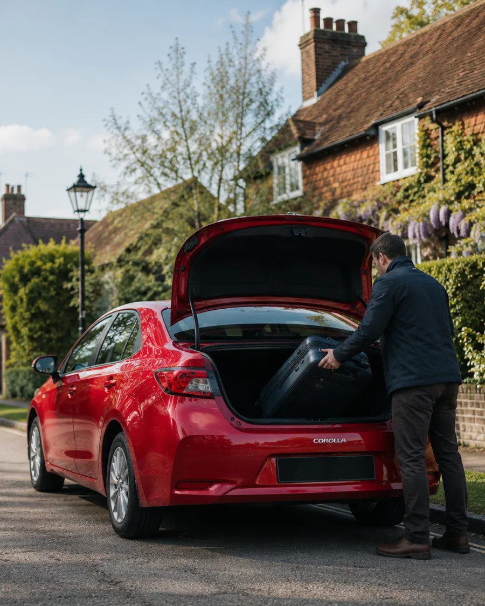

Chiddingfold · Godalming · Haslemere · 24/7
Reliable Chiddingfold & Godalming taxis and airport transfers
Your friendly local owner-driver for Heathrow, Gatwick, Luton, Stansted and London City airport transfers — plus local trips, station runs, long distance and courier runs across the Surrey Hills. A fixed price agreed before you travel, day or night.
- Friendly local owner-driver
- 24 hours, 7 days a week
- Fixed price agreed up front
Heathrow & Gatwick~45–55 min, planned early
Owner-driverthe same friendly face
24/7, 365 daysearly flights & late nights
Licensed private hireWaverley Borough Council
Our speciality
Airport transfers from Chiddingfold, Godalming & Haslemere
Airport runs are what we do most. We'll pick you up from your door, watch for the traffic, and get you there in good time — with a fixed fare agreed before you set off. Popular routes and rough journey times (traffic depending):
Gatwick North & South
Call for a priceLondon City LCY
Call for a priceLuton LTN
Call for a priceStansted STN
Call for a priceCruise & seaports
Call for a price- Fixed fare agreed before you travel — no meter, no surprises
- Early-morning & overnight pickups planned with time to spare
- Help with your luggage, door to door
- Return pickups from arrivals when you land
What we do
One local driver, whatever the journey
From an early flight to a quick run into town — book the same reliable, friendly driver every time.
Airport transfers
Heathrow, Gatwick, Luton, Stansted & London City — the trips we know best.
Local journeys
Nipping into Godalming, Haslemere or over to a neighbour's — short local hops, any time.
Station runs
No station in Chiddingfold? Lifts to Witley, Godalming, Milford, Farncombe & Haslemere.
Long distance
Anywhere in the UK, door to door — a comfortable ride the whole way.
Same-day courier
Documents, parcels and packages delivered securely, same day.
Weddings & events
Arrive relaxed and on time. Friendly, smart and dependable for your big day.

Why book with us
The reliable, friendly face you'll get to know
No call centres, no different driver every time. Just a local owner-driver who knows the Surrey Hills lanes — from Chiddingfold green to Godalming High Street — and turns up when he says he will.
- Genuinely reliable. Punctual pickups and plenty of time for flights — turning up on time is the whole job.
- Friendly & local. A familiar, easy-going driver who knows the area and the quickest routes.
- Fair fixed pricing. Your fare is agreed before you travel — no meter ticking, no hidden charges.
- Around the clock. 24 hours a day, 7 days a week, for the 4am flight and the last train home.
- Licensed & insured. Licensed private hire under Waverley Borough Council.
Areas we cover
Based in Godalming, serving the Surrey Hills villages
We're based at Godalming (GU7) and cover Chiddingfold and the surrounding Waverley villages. Not sure if we reach you? Give us a call — the answer's usually yes.
What customers say
Trusted by local travellers
A few words from people we've driven.
★★★★★
“Booked an early Gatwick run and he was outside five minutes early. Relaxed, friendly and got us there in great time. Wouldn't use anyone else now.”
★★★★★
“Reliable, always on time and a lovely bloke. We use him for the station and airport runs and he's never once let us down.”
★★★★★
“Fixed price agreed up front, spotless car and a friendly chat the whole way to Heathrow. Exactly what you want at 4am.”
Prefer not to call?
Get a quick quote
Send your journey and we'll come straight back with a fixed price. For anything urgent, calling is fastest — we're on 01483 387 475, 24/7.
- Fixed price, agreed before you travel
- Airport, local, long distance & courier
- We aim to reply quickly
Good to know
Frequently asked questions
What areas do you cover around Chiddingfold and Godalming?
We're based in Godalming and cover Chiddingfold, Godalming, Haslemere, Witley, Milford, Hambledon, Dunsfold, Grayswood, Brook, Elstead, Farncombe and the surrounding Waverley villages. If you're nearby and not sure, just call and ask.
How much is a taxi to Heathrow or Gatwick?
Every fare is agreed as a fixed price before you travel — no meter, no surprises. Call 01483 387 475 or send a quick quote request with your pickup, destination and date and we'll give you a price straight away.
Are you available 24 hours a day?
Yes — we run 24 hours a day, 7 days a week, including early-morning airport pickups, late-night returns and bank holidays.
How long does it take to get to Heathrow or Gatwick from Chiddingfold?
As a rough guide it's around 45–55 minutes to both Heathrow and Gatwick from the Chiddingfold and Godalming area, traffic depending. We plan early-morning pickups with plenty of time so you're never rushing for a flight.
Can I book an airport pickup in advance?
Absolutely — advance bookings are ideal for airport runs. Call or send a quote request with your flight details and pickup time and we'll confirm it back to you.
Do you do station runs if there's no station in Chiddingfold?
Yes. Chiddingfold has no station of its own, so lifts to and from Witley (the nearest), Godalming, Milford, Farncombe and Haslemere stations are one of the things we do most.
Ready when you are — day or night
Call for a fixed-price quote on your next airport run or local trip. We're here 24/7.
Call 01483 387 475